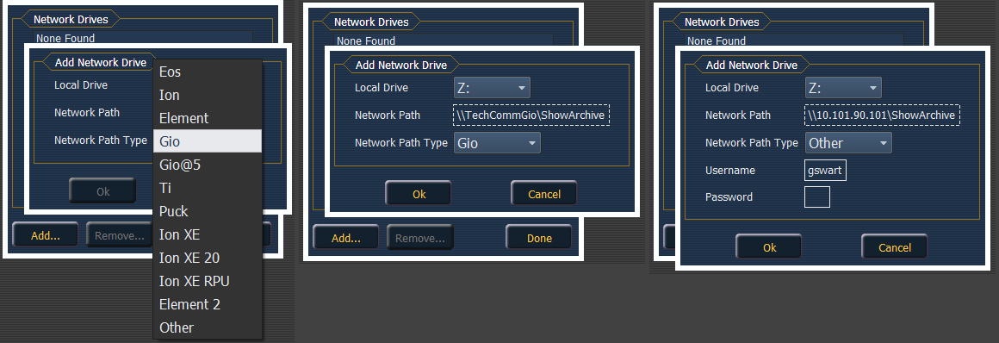

{Network Drives...} allows you to select an alternative show file storage location on another desk or computer. After setting this location, it will appear as an option within the save and open dialogs in Ion.
In the {Network Drives...} dialog box, there is a {Add} button for mapping a network drive. In the In the Add Network Drive dialog box, select the drive letter that is appropriate, the network path, and the path type. The network path can use either the IP Address or the Device Name. (Example: \\10.101.90.101\ShowArchive or \\YourDeviceName\ShowArchive) The network path type can be Eos, Eos Ti, Gio, Gio @ 5, Ion, Ion Xe, Ion Xe 20, Ion Xe RPU, Element, Element 2, or ETCnomad Puck. If Other is selected, you will have additional fields to fill out for Username and Password.
